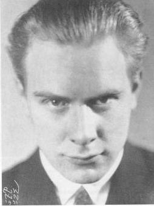
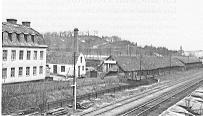
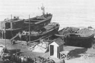
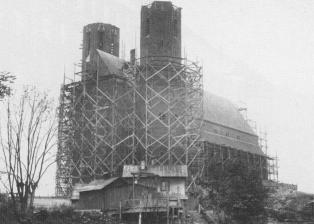
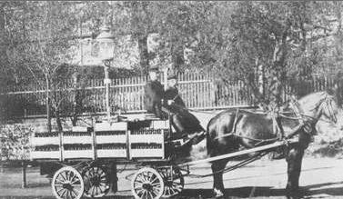
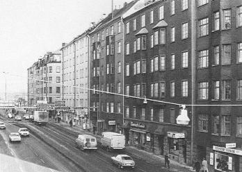
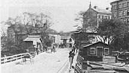
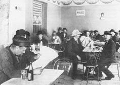
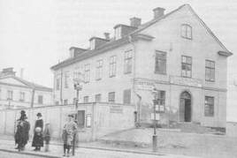
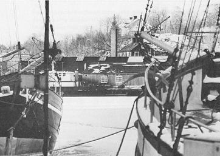

Södermalm i tid och rum. Stockholm
Ur Söder 700 - Sankt Eriks årsbok 1987En kille från Hornstull Erik Asklund somsöderskildrareav CARL OLOV SOMMAR
 | När Erik Asklund (1908-1980) kallade sig själv "en kille från Hornstull", så uttryckte han enbokstavlig sanning. Han föddes nämligen inte som de flesta Södergrabbar på Södra BB, utan hosackuschörskan Rosendorff, som hade sin mottagning i specerihandlare Erikssons hus i hörnet avBrännkyrkagatan och Långholmsgatan. Han var f ö tvilling: med ackuschörskans rutineradeassistens framföddes Erik och hans bror med 20 minuters mellanrum. Till yttermera visso döptesbröderna i den ena av de gamla f d tullpaviljongerna vid Hornstull som övergått till att utnyttjassom kyrklig lokal. Erik Asklunds uppväxt i den fattiga Söderutkanten innebar att han samlade på sig ett stort förrådav minnesbilder, ett helt skafferi av syner, dofter och ljud, från vilket stora delar av hans blivandeförfattarskap skulle hämta sitt material. Men innan han småningom kom därhän, attbarndomsupplevelserna blev en värdefull litterär tillgång; skulle denna proletära uppväxt genomlevas,vilket inte alltid var lätt. Fadern till de båda Hornstullstvillingarna övergav tidigt sin familj, varför modern ensam fick dra etttungt lass. Före daghemmens och barnbidragens tid skulle hon både se efter sina två små pojkar ochtjäna ihop pengar till livsuppehället. |
Utan yrkesutbildning som hon var, fick hon ta de lågbetaldakvinnojobb som stod till buds: som buteljsköljerska på bryggeri eller som kallskänkebiträde pårestaurang. Ibland räckte pengarna ändå inte till hyran och då blev de vräkta. Vid ett tillfälle närgossarna var fyra år ställdes de på gatan och fann ett tillfälligt tak över huvudet i en nedlagdrepslagarbana vid Tantolunden. Det råkade sig så att en stockholmstidning samtidigt hade enpristävling, som gick ut på att upptäcka en av tidningens medarbetare. Denne gömde sig någonstansute på stan och gav genom reportage ledtrådar om var tidningsläsarna skulle leta. Slumpen gjorde attmedarbetaren kom till repslagarbanan i Tanto. I tidningen skrev han:
| "Inbäddad i lummiga träd, strax nedanför Tantolunden, synes en lång, grå, ladliknandebyggnad. Det är en av de gamla, nu snart försvunna repslagarbanorna. Väggarna äro glesa ochgöra intryck av att vilja sjunka in när som helst. Vid närmare undersökning av ladan finner man,att en hel del av den är apterad till boningsrum. Det är en bedrövlig anblick, som möter denbesökande vid inträdet i skjulet. Möbler, husgeråd och kläder- av alla slag - ligga sammanpackadei ett av hörnen. I ett annat hörn synes ett fotogenkök och diverse kokkärl. Vid minsta fläkt utifrånuppstår korsdrag genom de glesa väggarna. Mitt på jordgolvet sitta två 4 års pojkar och se heltförnöjda ut. De omtala med självbelåten min, att här bor vi!" |   |
Pojkarna var alltså Erik Asklund och hans bror. Efter flera flyttningar till olika smålägenheter - oftastmed ett rum samt del i kök - fann Asklunds ett mer varaktigt hem på Långholmsgatan, i nr 7 intill denblivande Västerbrons södra landfäste. De bodde n. b. ö. g. som det hette, alltså på nedre botten övergården med utsikt över en piskställning och ett par stinkande soptunnor. Första världskriget kommed ytterligare svårigheter att skaffa mat och bränsle. Trångboddhet och undernäring gjorde attmånga barn fick engelska sjukan eller tbc; Eriks tvillingbror var ett av de barn som dog i förtid. Självfick han i 8-9-årsåldern börja bidra till uppehället. Det fanns många metoder, även om de flesta inte stämde medlagen. Tillsammans med andra grabbar smög han ut på nätterna och stal brädstumpar frånbyggen och kol från kolpråmar vid Söder Mälarstrand. Somrar och höstar kunde han frånkoloniträdgårdar hämta hem kålrötter; potatis och morötter, varutöver han - mera som ensjälvklarhet - pallade äpplen och päron.
  | Matsedeln i hemmet kunde ibland uppvisa en märklig kombination av fattigmanskost ochherrskapsmat. Det hände att sill och rotmos åts tillsammans med kycklingbröst och gåslever. Det varförstås matrester från restaurangköket, som modern kunnat smuggla med sig hem. Pojkligorna från det proletära Hornstull levde ett spännande liv. Krig med träpåkar, stenslungoroch slangbågar utkämpades mellan olika ligor. Det fanns gott om fria obebyggda områden, där dekunde hålla till, ostörda av poliser och andra vakande ögon. I norr fanns Långholmen, i nordostSkinnarviksbergen och i sydost Tantobergen och Zinkensdamm. |
| Men också på egen hand upplevde Asklund åtskilliga äventyr. När Högalidskyrkan 1919-20 börjadebli färdig, skulle Asklund en vinterkväll, stjäla plankbitar från byggnadsplatsen. Han blev emellertidupptäckt av en nattvakt med hund och sprang i den första förvirringen in i det ena av kyrkans torn och vidare uppför trappan. Med nattvakten och den flåsande hundenstrax efter sig insåg han sin förtvivlade situation: högst uppe i tornet skulle han bli obevekligtinfångad. Då upptäckte han i en fönsterglugg att det låg en planka som spång till det andra tornet.Med förtvivlans mod sprang han ut på plankan och lyckades gå den livsfarliga balansgången högtöver marken till det andra tornet. Nattvakten ville inte riskera livet och därmed var han alltsåräddad den gången. |   |
 | Sitt första jobb fick Asklund under det sommarlov, då han var 10 år. Från 7 på morgonen till 7 påkvällen var han "matsäck" åt en av ölutkörarna vid Münchens bryggeri. Vid varje affär ellermjölkmagasin, där det hästdragna ekipaget höll, skulle han bära järnkorgar, med 25 flaskor i varje, intill affärens lager. Sen skulle han trava tomflaskor och bära ut till vagnen. Ibland bjöd snällamagasinsfruar på mjölk och bullar. Bryggarhästarna var stora ardenner med namn som Stella, Astoroch Pollux - som kunde rutten lika bra som kusken. Inkomsten bestod av 10-öringar i dricks frånaffärsinnehavarna och någon 5-öring från kusken, när han vattnade hästen. |
I huset Långholmsgatan 1 hade Erik Asklund en vän, som hette Josef Kjellgren. De tillhördeolika ligor, Kjellgren Heleneborgsligan och Asklund Långholmsligan, men fick i tonåren ändå godkontakt med varann. De avvek båda på en viktig punkt från sina övriga kamrater; de hade ett starktläsintresse. I deras hem fanns inga böcker och Stockholms stadsbibliotek var föga utvecklat.Däremot hade skolbiblioteket i Maria skola, där de gick, lockande saker att erbjuda, somStevensons Skattkammarön, böcker av Mark Twain och böcker ur Barnbiblioteket Saga. Efterskolan lånade de i Maria församlingsbibliotek, som var förhållandevis välförsett. Jack London varbland de första vuxenförfattare som Asklund läste. Sen gick det raskt vidare med Dan Andersson,Erik Lindorm, Strindberg, Hjalmar Söderberg och andra. Asklund och Kjellgren visste att det bodde en tvättäkta författare i ett av grannhusen. Det var RudolfVärnlund. En dag 1926 tog de mod till sig och gick upp till Värnlund och undrade hur man skullebära sig åt för att bli författare. |
  |
- Ni skall läsa, pojkar, sa Värnlund.
Och de läste vidare: Hedenvind, Södergran, Diktonius;Joseph Conrad, Walt Whitman, Carl Sandburg. Fadern hade efter många års bortovaro dykt upp ihemmet. Han var numera mormon och sökte vinna sin son för denna lära. Han tog hemamerikanska mormonbröder till hjälp. Sonen var inte alls intresserad; men han kunde inte undgå attlära sig en del engelska på kuppen, som han hade nytta av i sin litteraturläsning.
Asklund och Kjellgren gick på Arbetarinstitutet och hörde "Torsten Fogelquist och Emy Ekföreläsa om litteratur och livsåskådningsfrågor. De hörde politiska diskussioner i Auditorium ochViktoriasalen. De började själva skriva dikter och prosaskisser, som de till en början lämnade tillden kyrkliga pojkföreningens medlemsblad i Högalid. Snart övergick de till att sälja dikter ochnoveller till dagstidningar och tidskrifter. Därigenom fick de i 20-årsåldern kontakt med andraunga arbetarförfattare som Värnlunds vän Eyvind Johnson, med skåningen Artur Lundkvist ochöstgöten Gustav Sandgren. 1929 debuterade de tillsammans med Lundkvist, Sandgren och HarryMartinson - i den lyriska kalendern Fem unga och samma år fick Asklund ut sin första egna bok,"romanpuzzlet" Bara en början.Därmed blev Asklund yrkesförfattare för resten av sitt liv eller kanske snarare vad som på 1800-taletkallades litteratör, d v s en person som försörjer sig på att lämna bidrag till tidningar och tidskriftersamt på att ge ut böcker av skilda slag.
Det dröjde fyra-fem år innan Asklund hittade sig själv som författare. I början hade han en hetlitterär ambition och ville vara modernist och vitalist. Liksom Artur Lundkvist ville han skildradrifternas spel, storstadstrafikens brus och jazztrumpeternas sång. I sina tidiga romaner -Ogifta, Kvinnan är stor, Fanfar med fem trumpeter - gjorde han tappra försök i den riktningenmen lyckades inte få någon större framgång. Den skönlitterära fiktionen var inte Asklundsstyrka, hans intriger var inte särskilt spännande och människorna i hans romaner förblevganska konturlösa.
Han skrev om Livet, Staden och Människan på ett abstrakt sätt, som kanske var avsett att skapa enverkan av allmängiltighet. Men efterhand upptäckte han att det gick bättre om han skruvade nerambitionerna och blev lågmäld och konkret. I stället för att skriva om Kvinnan berättade han omhattmodisten Alice, i stället för att skriva om stadens gator i allmänhet började han berätta om Lundagatan och Brännkyrkagatan. Med dennakonkretisering av det levande stadslandskapet hade han funnit sitt revir. I fortsättningen, under40-, 50- och 60-talet skrev han två romanserier med stark Stockholmsanknytinng, dels fem småvolymer om Södergrabben Manne, dels trilogin Bröderna i Klara, Livsdyrkarna och Drakensgränd,som mycket underhållande skildrar stockholmsförfattare på 30-talet och deras miljöer. Ibåda romanserierna avstår han från att uppfinna intriger, utan bygger helt enkelt på vad han självminns och är förtrogen med. Dessutom skrev han ett antal böcker som helt utan litterär fiktion gerbilder och stämningar från Stockholm, bl a Stad i Norden, Ensamma lyktor, Se min stad och Enkille frän Hornstull. Hans ställning som en av våra mest produktiva Stockholmsskildrare befästesytterligare genom att han skrev ett antal pojkböcker med stockholmsmiljö och vidare stod förtexten till flera fotoböcker, Stockholm, sommarstaden och Stockholm bakom fasaden, där K WGullers svarade för bilderna.
Erik Asklund kom att röra sig i hela Stockholm, från Västerbron till Waldemarsudde och frånSkanstull till Haga. Han hade också ett vaket öga för de fattiga utkantssamhällena bortom tullarna -Gröndal, Aspudden, Hagalund - och en av hans finaste böcker, Fattigkrans, handlar om dem. Men det speciellarevir där han rörde sig med särskilt kärleksfull inlevelse och sakkunskap var barndomstrakten påvästra Södermalm. Den avgränsades i öster av Mariaberget och Adolf Fredrikstorg - numeraMariatorget - och i sydost av Tanto sockerbruk; på övriga sidor bildade vattnet naturliga gränsermed Riddarfjärden, Liljeholmsviken och Årstaviken.
Det mest påfallande draget inom detta område på 1910- och 20-talet var den starkaindustrialiseringen. Nere vid Söder Mälarstrand låg Münchens bryggeri, som blivit kraftigt utbyggt1906-09. På Långholmens östspets fanns Mälarvarvet och på Reimersholme Vin- & Spritcentralensanläggningar, där modern en tid sköljde buteljer, samt Stockholms Yllefabrik, där Josef Kjellgren på20-talet arbetade som maskinist. En annan stor yllefabrik låg vid Liljeholmen och vid Hornsplan lågStockholms Skofabrik. Bakom denna, på Lignaområdet fanns Ligna Snickerifabrik.Det ojämförligt största industriföretaget vid Hornstull var emellertid Bergsunds mekaniska verkstad,som disponerade ett stort markområde på Södermalms västspets. Verkstaden hade ett omfattandetillverkningsprogram, som sträckte sig från järnbroar till isbrytare och bogserbåtar.
På Bergsundsvarvetsområde låg gamla slitna skonare och fullriggare, har Asklund berättat, "här vittrade skroven tilluttjänta lasttrampar och sorgligt skamfilade mälarbåtar, här flammade de mönjeröda sidornahos en nybyggd femtusentonnare, som snart skulle göra sin jungfruresa till någon engelskkolhamn. Här smattrade nithammare och klingade släggor, svetsarlågornas magiska sken lystei skymningen och gnistorna från smältande järn flög som från ett diminutivt fyrverkeri överstapelbäddarna vid det mörka vattnet.''
  | I sina skildringar från sin ungdoms Söder har Asklund fångat mycket som nu är borta och glömt.Han minns t ex den gamla flottbron som före den första högbron - färdig 1928 - förband Söder medLiljeholmen. Den låg nere vid Brännkyrkagatans slut och dess mittparti kunde svängas åt sidan, dånågon skuta skulle passera in i Årstaviken. Han berättar om "de urholkade plankorna i bron, somvarit riktigt luddiga och uppslitna; med gropar efter hästarnas hovar. Vid tunga lass sjönk flottarnaunder vattnet och hästspillningen flöt ut över alltsammans och bildade en gulbrun sörja, som hanvadat i med sina |
Över denna bro mot staden kom också bondforor dragna av små raggiga hästar från Västbergaoch Vällinge. De fraktade grönsaker och levande tuppar till torghandeln i stan. Bönderna satt medpiskan i hand och betraktade misstänksamt stadspojkarna vid tullen, som gärna hängde eftervagnarna och oroade tupparna så att de började gala.
| Bilarna var under första världskriget ännu i minoritet. Men södergrabbarna studerade förståsmed intresse de nymodiga modellerna: höga Minervabilar med metallbeslag som blänkte i solenoch T-Fordar med mässingskylare och med handbromsen placerad utanför förarens bildörr.För Erik Asklund och hans grannar på Långholmsgatan var livet hårt och fattigt, men alls inteenahanda eller sterilt opersonligt. Allt var nära och välbekant. Att det fanns hotfulla ligapojkar,lättretade portvakter och elaka satkäringar fick man tidigt lära sig. Långholmsgatan hade ett antalinstitutioner, som spelade sina olika roller i tillvaron. I gatans ena ända låg det stora ölkaféet Valhall,som på kvällarna lockade trötta och törstiga arbetare med skummande pilsner, ostmackor ochdoftande biffstekar. Den som lämnade Valhall efter alltför kraftig förtäring kunde hamna i händerna påpatrullerande poliskonstaplarna Spisrakan och Busfasan, vilka utan resonemang satte in demi polisfinkan i gatans andra ända. Hade de tur och undgick ordningsmakten, kanske de istället fick en kristligt hjälpande hand av någon frälsningssoldat från 4:e kåren eller från denvänlige pastor Lagerkrantz i Mariasalen, som var statskyrkans enda lokal vid Hornstull,innan Högalidskyrkan blev färdig. Polisstationen och Frälsningsarmen höll till i ett och samma hus, kallat Gröna buren, ochbeläget på den plats, där sedan ett av de första funkishusen - med biografen Flamman -uppfördes 1929. Utanför Gröna buren kunde man på söndagsmorgnarna se egendomligamöten mellan nyss utsläppta fyllerister som sovit ruset av sig och intågande frälsningssoldatermed fanor och gitarrer. De som haffades av polisen för värre saker än fylleri hamnade på Långholmen, som ocksålåg inom gatans synkrets. Livets alla realiteter fanns sålunda med pedagogisk tydlighettillgängliga för Erik Asklund och hans kamrater på Långholmsgatan. |     |
Men för pojkar fanns en mångfald av sysselsättningar. Sverige hade vunnit Olympiaden iStockholm 1912 och idrottsrörelsen var ung och framåtsträvande. Erik Asklund spelade ikedjan i Ligna SK. Han har skildrat en fotbollsmatch på Hammarby, där Ligna möterSickla-Kamraterna och lyckas vinna med 3-1, sedan Manne - Asklunds alter ego - gjort tvåmål genom fantastiska sologenombrott.
  | Stockholms vatten spelar också en viktig roll i Asklunds böcker. Nere i Pålsundet tuffarmotorbåtarna, över Riddarfjärden gör olika färjlinjer sina turer och vid Söder Mälarstrandlossar skutorna sin last: "Här satt man under långa soliga sommardagar med bara ben motkajens brännande trä och metade mört, stora feta mörtar som man fiskade på känn itrummans grumliga vatten och sedan stolt radade upp bredvid sig. Jag minns ocksåkreatursfållan vid kajen, där de vita mälarbåtarna lade till med sina boskapslaster. En gångslet sig en vildsint tjur och det blev något liknande tjurfäktning på kajen, när alla rusade tillför att fånga in tjuren: skutskeppare, hamnsjåare och de ständiga medlemmar av ledighetskommittén, som här njöt sin siesta i solskenet."
När man skall återuppliva en gången tid är det inte minst viktigt att berätta om maten. Asklundfallerar inte på den punkten heller. När sotarn i Hornskroken fyller 50 år ställer han till med etthejdundrande kalas på sin gård. Piskställningen flyttas åt sidan, långbord placeras ut med plankor påbockar som sittplatser. Vad finns det på borden? |
Erik Asklund hade - till skillnad från sin vän Josef Kjellgren - ingen stark politisk övertygelse. Hanvar en vaken iakttagare, som inte tog ställning åt vare sig ena eller andra hållet. Det har denfördelen att hans skildringar av det fattiga, orättvisa, ofta brutala samhälle, där han växte upp, intefärgas av social indignation, utan snarare präglas av frisk observans.
Asklund har som Stockholmsskildrare ibland jämförts med stora föregångare som Bellman, Strindbergoch Hjalmar Söderberg, vilka han förvisso beundrade. Själv hade han inga anspråk på att tävla meddem; han ville helt enkelt lämna sin personliga strof till den stora dikten om Stockholm. Han harockså, vilket är mer närliggande, ställts vid sidan av Per Anders Fogelström. Asklund och Fogelströmhar ju - nästan som om de träffat en överenskommelse - delat upp Söder i en västlioch en östlig hälft och tagit hand om var sin del.Till skillnad från Fogelström har Asklund dockinte bedrivit djupgående forskning i stadsdelens historia. Inte heller har han haft Fogelströmsförmåga att forma stora romanbyggen, där en rad livsöden gestaltas. Asklunds styrka har i ställetvarit troheten mot de egna minnesbilderna, förmågan att åskådligt återkalla dofter och stämningarfrån sin barndoms och ungdoms stad.
Erik Asklund hann både flytta från sin barndomstrakt - han bodde som vuxen i 18 år vidHammarbyhamnen - och återvända dit. Från 1968 bodde han i ett av kommunen upprustat s kkulturhus i Skinnarviksbergen med adress Gamla Lundagatan 14. Han fick under decenniernaslopp se staden förvandlas, kvartersbiograferna läggas ner, spårvagnarna tas ur trafik ochklappbryggorna vid Söder Mälarstrand försvinna. Han var glad att utvecklingen gick framåt, attfolk fick bättre bostäder med välutrustade kök, badrum och sopnedkast, nya skolor, nya finadaghem. Men han menade att man mitt uppe i den nya skinande välfärden inte skulle tappa bortsina rötter. Själv mindes han det som varit: gårdsmusikanterna, T-Fordarna, poliserna med sabeloch pickelhuva, de blå spårvagnarna med gul brevlåda längst bak, paltbrödskön i Maria Saluhallunder första världskriget, de arbetslösa som låg i gröngräset i Tantolunden och spelade kort ...
Med sina böcker hjälper han oss andra att minnas en försvunnen stad. Vad fick honom att ibok efter bok berätta om denna stad? Jag tror att det var en önskan att rädda kvar något, somannars skulle gått förlorat, men också en känsla av medmänsklig solidaritet. Att bo i en stad, attbo i ett stort hyreshus innebär att man har nära till sina medmänniskor. Asklund formuleradesaken så här:
"Det stora huset som jag lever i är fyllt av öden, av människor och ljud. Det vakar halva natten, spelar,sjunger, dansar. Och jag hör barngråt, sjukas jämmer, ett par som grälar, en ensam flicka som spisarjazz i skymningen. Jag hör dem alla, människorna, deras strider, deras gräl, deras skratt, derasglädje, deras kärlek når mig från alla håll. Vaken, orolig, lyssnande följer jag bakom mina väggar detstora kvarterets liv. Jag är en av dem. Jag är inte ensam. O, gemenskap och värmande liv!"